ArDraCor: zum Aufbau eines argentinischen Dramenkorpus für die Plattform DraCor
Ulrike Henny-Krahmer (Universität Rostock)
Ringvorlesung LMU (online), 23. Juni 2025.
Präsentation: https://hennyu.github.io/lmu_25/

Überblick
- ArDraCor: Ausgangspunkt und Ziele
- Strategien zum Korpusaufbau
- Aktueller Arbeitsstand
- Fazit
ArDraCor: Ausgangspunkt und Ziele
ArDraCor: Ausgangspunkt und Ziele
|
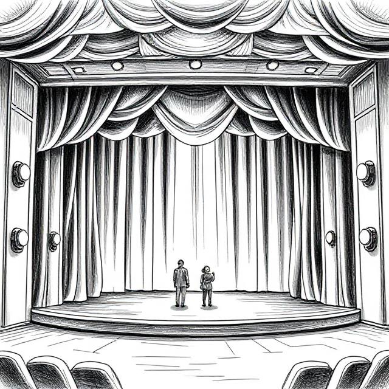
(erstellt mit deepai.org) |
Warum überhaupt digitale Dramenkorpora?
|
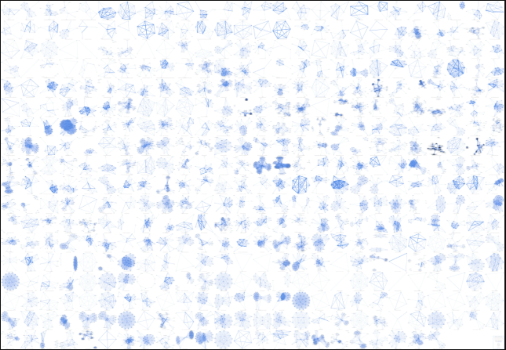
(Netzwerkgraphen zu 465 Stücken in chronologischer Reihenfolge - Trilcke und Fischer 2018) |
Computational Literary Studies (CLS) bieten die Möglichkeit,
literaturgeschichtliche Fragen auf neue Weise zu untersuchen, z. B.: ... groß angelegte Studien zu Epochen, Strömungen, Wandel... ... neue Blickwinkel auf Strukturen und Textstil (von Autor:innen, Gattungen, ...) ... komparativ angelegte Untersuchungen (verschiedene Kulturräume/Sprachen) |
Was ist DraCor?
'DraCor is short for "drama corpora", a growing collection of plays in (mostly) European languages, all encoded in TEI. We are maintaining some in-house corpora which we built from the ground up (GerDraCor and RusDraCor). In addition, we adapted (and enhanced) some corpora that were released under free licenses. We also host corpora maintained by others.'
Was ist DraCor?
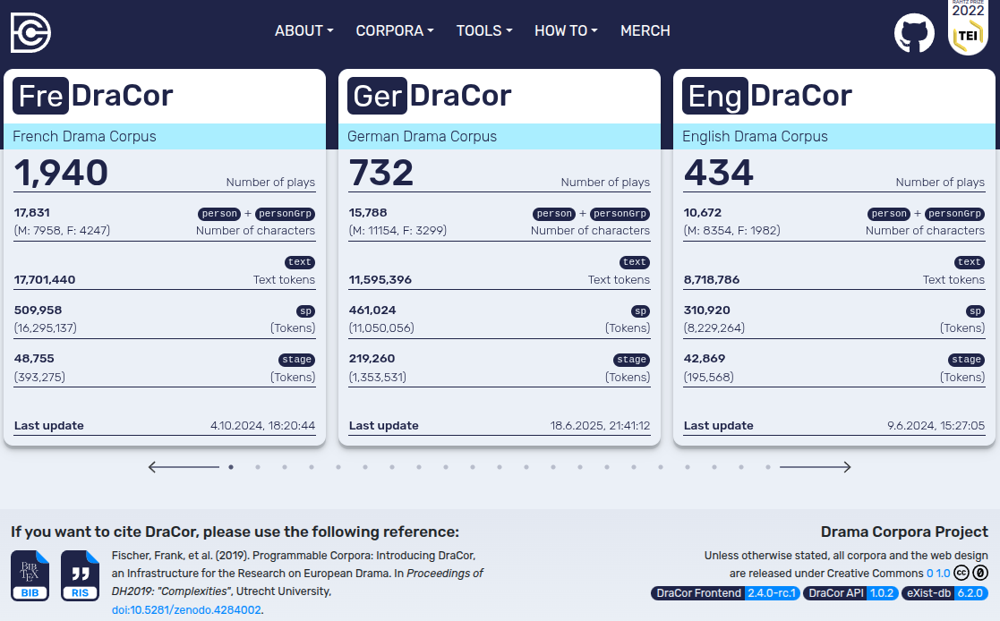Aktueller Umfang von DraCor
- 18 publizierte Korpora (Alsatian, Bashkir, Calderón, Dutch, French, German, German Shakespeare, Greek, Hungarian, Italian, Roman, Russian, Shakespeare, Spanish, Swedish, Tatar, Ukrainian, Yiddish)
- weitere Korpora im Entwurfsstadium (Czech, English, Georgian, Neo-Latin, Polish, Romanian, American, Hebrew, Jesuit Latin, Argentine, ...)
- Gesamtumfang aktuell: 7,647 Stücke
Noch einmal: Was ist DraCor?
- 'DraCor is not primarily a website. DraCor is a showcase for the concept of Programmable Corpora.'
- 'DraCor aims to create an interface between traditional and digital literary studies'
Wie sieht ein Stück in DraCor aus?
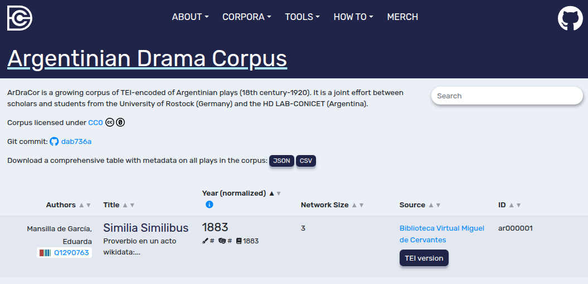(lokale DraCor-Installation)
DraCor-Ansicht: Einzelwerk
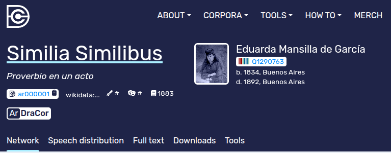(lokale DraCor-Installation)
DraCor-Ansicht: Netzwerk
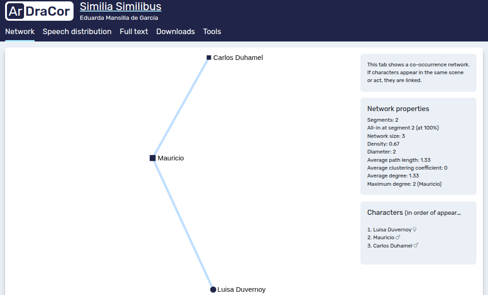(lokale DraCor-Installation)
DraCor-Ansicht: Figurenrede
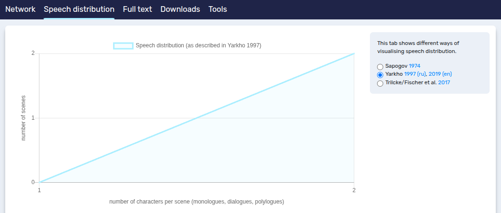(lokale DraCor-Installation)
DraCor-Ansicht: Volltext
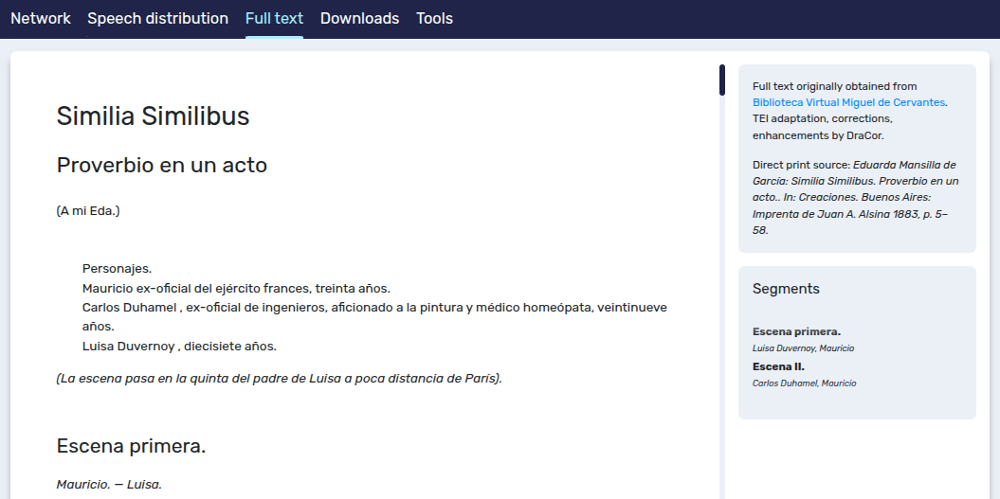(lokale DraCor-Installation)
DraCor-Ansicht: Downloads
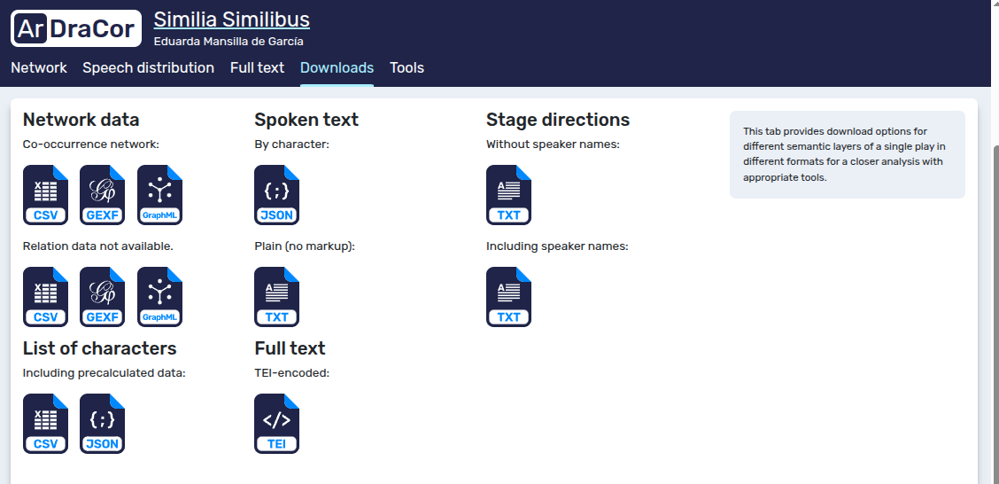(lokale DraCor-Installation)
DraCor-Ansicht: Tools
| 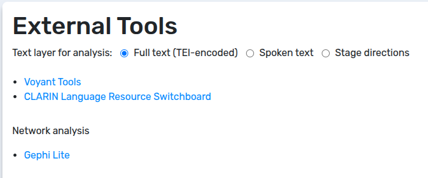 | 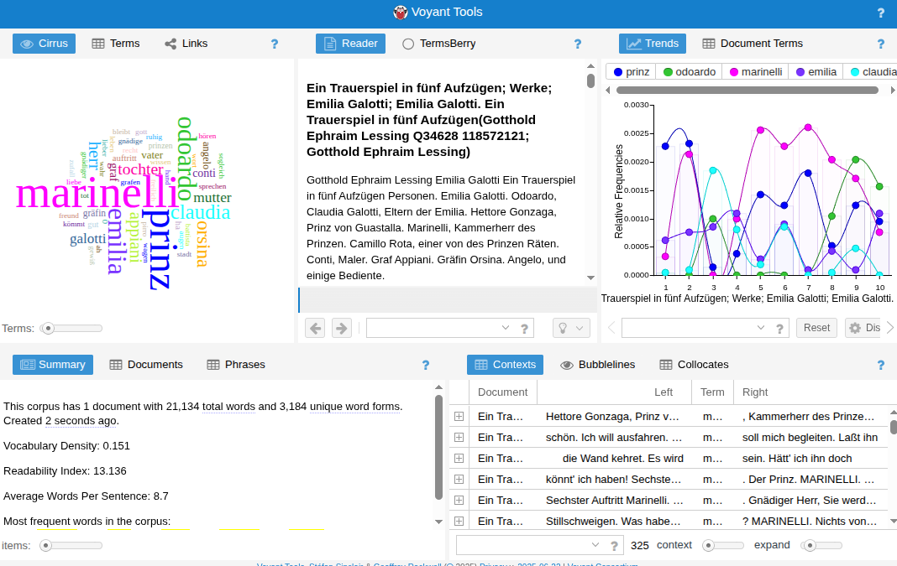 |
https://dracor.org/ger/lessing-emilia-galotti#tools https://voyant-tools.org/?corpus=2f83e02b4336e96e9787661971c74b8b&input=https://dracor.org/api/v1/corpora/ger/plays/lessing-emilia-galotti/tei
Strategien zum Korpusaufbau
Von DraCor zu ArDraCor...
- Ziel: DraCor-Infrastruktur für unser eigenes Projekt nutzen.
- Wie kommen wir dahin?
Was soll ArDraCor umfassen?
- möglichst viele argentinische Dramentexte vom späten 18. bis zum frühen 20. Jahrhundert
- grundlegende Metadaten zu jedem Drama (Autor:in, Titel, Gattung, Daten, Quellen)
- den digitalen Volltext jedes Dramas
- strukturelles Markup für jedes Drama (Figuren, Akte, Szenen, Rede, Bühnenanweisungen)
Was ist interessant an ArDraCor?
|
(erstellt mit deepai.org) |
Wer arbeitet an ArDraCor?
|
|


Pragmatische Vorgehensweise
- Recherche: auf bekannten Plattformen/in Bibliographien
- Digitalisierung: Bestehendes nutzen (strukturierte Volltexte; unstrukturierte Volltexte; Bilddigitalisate)
- Textkonstitution: Sprachstufe und Orthographie i. d. R. abhängig von der Vorlage
- Strukturierung: Nutzung vorhandener Tools für Konversion und Aufbereitung
Einige Quellen
| Biblioteca Digital Argentina | |
| Biblioteca Virtual Miguel de Cervantes | |
| Wikimedia Commons: Sammlung der Argentinischen Akademie | |
| Digitale Sammlungen des Ibero-Amerikanischen Instituts (IAI) | |
| Seibel, Beatriz: Antología de obras de teatro argentino: desde sus orígenes a la actualidad, Buenos Aires: Instituto Nacional del Teatro, 2006-2017. |
Metadaten
zunächst Sammlung in Tabelle
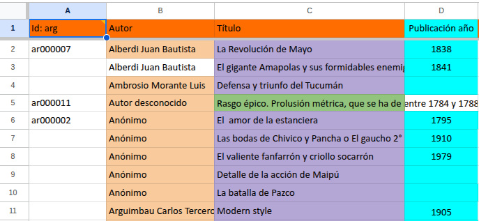Textextraktion
Optical Character Recognition (OCR)
- Nutzung bestehender OCR-Texte (z. B. aus PDF)
- Herstellung eigener OCR-Fassung (z. B. mit dem Tool OCR4all)
Beispiel: OCR4all
| 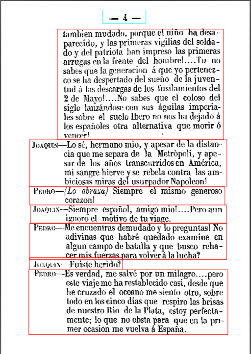 | 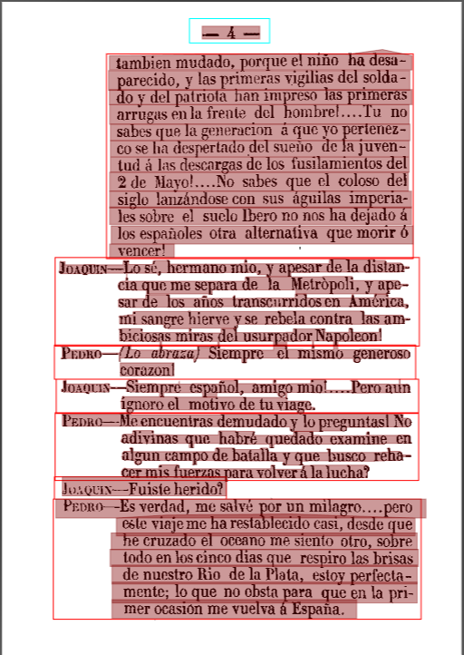 | 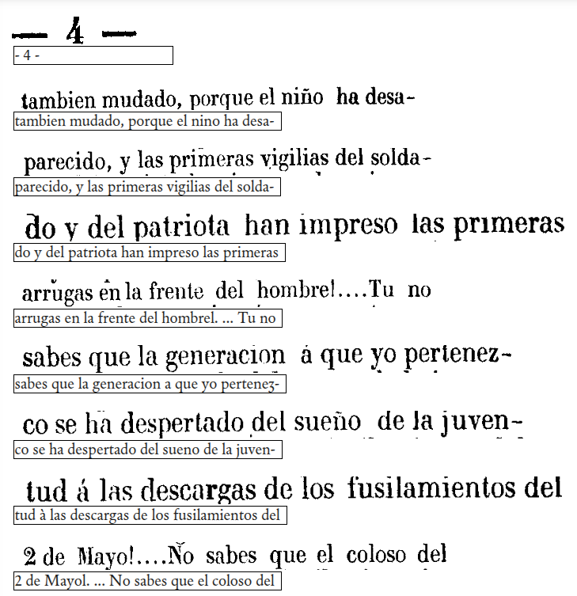 |
Markup
Zielformat: TEI (Guidelines der Text Encoding Initiative)
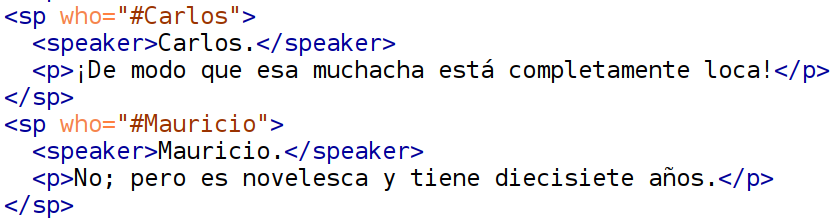Konversion
Optionen (je nach Ausgangslage):
- TEI zu TEI (kommt nicht vor)
- HTML zu TEI
- OCR4all - PageXML - XSLT - TEI
- Volltext - EzDrama Markup - TEI
- immer: halbautomatische/händische Nachbearbeitung
Aufbereitung in TEI
Was ist (noch) zu tun?
- Metadaten codieren (im 'TEI Header'): bibiographisch, administrativ
- Struktur semantisch auszeichnen: Akte, Szenen, Überschriften, Rede...
- Cast List erstellen, Figuren und Sprecher identifizieren
- Normdaten zuweisen: zu Autor:in, ggf. Gattung, ggf. Figur, Bearbeiter:in
Aktueller Arbeitsstand
Aktueller Arbeitsstand
DraCor-Repositorium angelegt: https://github.com/dracor-org/ardracor
| Werke in TEI | 5 |
| Werke als bereinigter Volltext | 24 |
| Werke mit mind. Bilddigitalisat | 100 |
| Werke bisher ohne Textzugang | 100 |
Eckdaten Werke mit mind. Bilddigitalisat
| Autor:innen | 54 |
| Autorinnen | 5 |
| Anonym | 6 |
| Publikation datiert | 35 |
| Aufführung datiert | 91 |
| Untergattung erfasst | 89 |
Fazit
Fazit
|
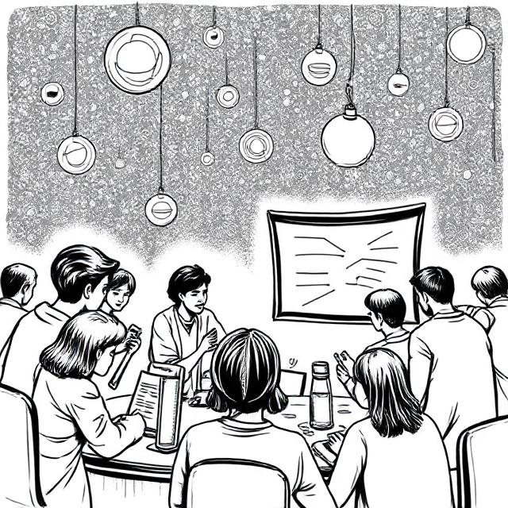
(erstellt mit deepai.org) |
Literaturhinweise
- Fischer, Frank, et al. (2019): Programmable Corpora: Introducing DraCor, an Infrastructure for the Research on European Drama. In: Proceedings of DH2019: "Complexities", Utrecht University, DOI: 10.5281/zenodo.4284002.
- Seibel, Beatriz, Hrsg. (2006-2017). Antología de obras de teatro argentino: desde sus orígenes a la actualidad. Buenos Aires: Instituto Nacional del Teatro.
- Trilcke, Peer und Frank Fischer (2018): Literaturwissenschaft als Hackathon. Zur Praxeologie der Digital Literary Studies und ihren epistemischen Dingen. In: Wie Digitalität die Geisteswissenschaften verändert: Neue Forschungsgegenstände und Methoden. Hg. von Martin Huber / Sybille Krämer. (= Sonderband der Zeitschrift für digitale Geisteswissenschaften, 3). text/html Format. DOI: 10.17175/sb003_003
Vielen Dank für die Aufmerksamkeit!
Präsentation:
https://hennyu.github.io/lmu_25/